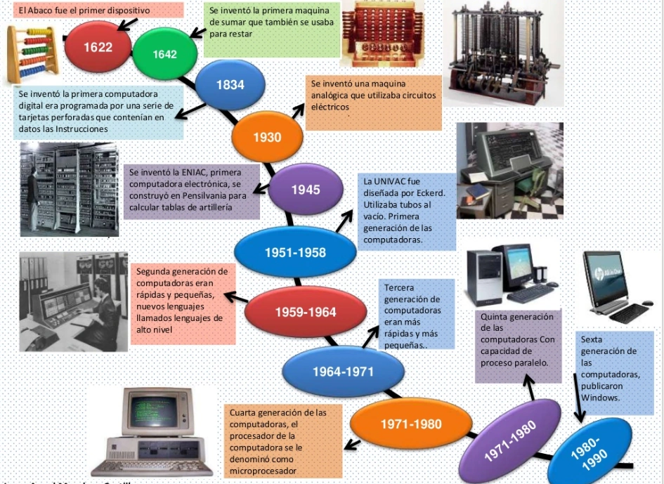
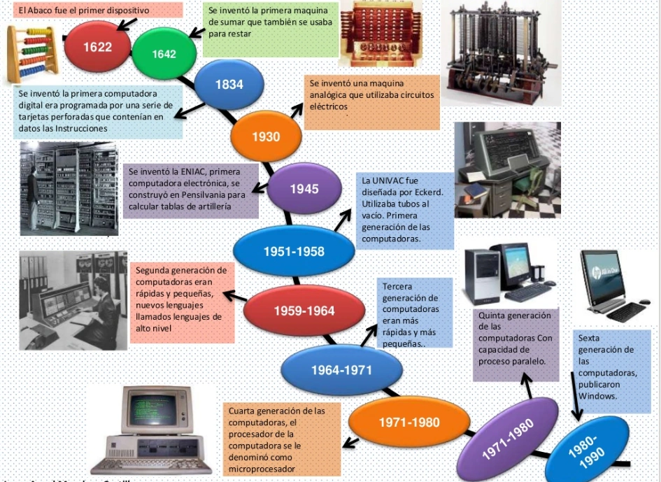
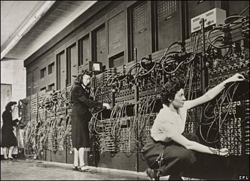
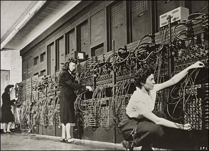

¿Qué es el Hardware?
Primero es fundamental que comprendamos mejor nuestra herramienta de trabajo: el computador. La máquina que tienes a tu disposición, por más modesta que sea, es un dispositivo de altísima tecnología, mucho más poderoso que las computadoras utilizadas para los cálculos de la primera bomba atómica o el proyecto que llevó al hombre a la luna.
El Hardware es el conjunto de componentes físicos de un sistema informático, como la placa madre, el procesador, la memoria RAM, los discos duros, y los dispositivos periféricos como el teclado, el mouse y el monitor. Es la parte tangible del ordenador, necesaria para ejecutar el software y realizar diversas tareas computacionales.
Es importante porque proporciona la infraestructura física necesaria para el funcionamiento de los sistemas informáticos. Afecta directamente el rendimiento, la funcionalidad, y la experiencia del usuario, y es un motor clave para la innovación tecnológica. Además, la evolución del hardware contribuye a la sostenibilidad, la accesibilidad, y el desarrollo de soluciones avanzadas en numerosos campos. Sin hardware, la tecnología moderna y muchas de las comodidades y avances de la vida cotidiana simplemente no serían posibles.

 

.jpg) 
